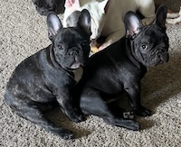
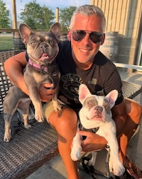

Resources for all things Frenchie
Welcome to the Resource Page of our French Bulldog Community Hub, your go-to destination for all things Frenchie! Here, you'll find an array of valuable information and tips on topics ranging from health and nutrition to training and socialization. Dive into our expertly curated advice to enhance your understanding and care for these lovable companions. Join us in celebrating the uniqueness of French Bulldogs and help ensure every Frenchie can lead a happy, healthy, and well-loved life.
HOW TO FIND A REPUTABLE BREEDER
Finding a reputable breeder for French Bulldogs is a crucial step in welcoming a healthy and well-adjusted pup into your home. Start by researching breeders who prioritize the health and wellbeing of their dogs, focusing on those who conduct thorough health screenings for common French Bulldog ailments, such as respiratory and hip issues. It's important to visit the breeder’s facility to observe the living conditions and meet the puppy’s parents, ensuring that the dogs are raised in a clean, loving environment. Engage in open discussions with the breeder about their breeding practices, asking questions about socialization, health clearances, and any genetic testing performed. A trustworthy breeder will be transparent, providing documentation and willingly offering lifelong support and guidance. Additionally, reputable breeders often have associations with breed clubs, which adhere to high ethical standards. Remember, a responsible breeder is dedicated to matching you with the right puppy, ensuring a happy and healthy future for both you and your new Frenchie companion.
Click her for more information: French Bulldog Club Breeders.
5 THINGS TO KNOW ABOUT OWNING A FRENCH BULLDOG
Owning a French Bulldog is a delightful experience, but there are five key things every prospective owner should know: First, these lovable pups are known for their affectionate and sociable nature, thriving on human interaction and making them ideal companions for both individuals and families. Second, due to their brachycephalic (short-nosed) structure, Frenchies can be prone to respiratory issues, so it’s important to monitor their activity levels, especially in hot weather. Third, while they are not high-energy dogs, they still enjoy daily walks and playtime to maintain a healthy weight and mental stimulation. Fourth, French Bulldogs are relatively low-maintenance in terms of grooming, but their facial folds require regular cleaning to prevent skin infections. Finally, they can be quite stubborn during training, so patience and positive reinforcement are key to helping them learn and thrive. With these considerations in mind, French Bulldog ownership can be an incredibly rewarding journey filled with love, laughter, and plenty of snuggles.
here for more information: 5 things nobody tells you about owning a french bulldog?
GROOMING 101: TIPS FOR CLEAN EARS AND WRINKLES
Cleaning the ears and wrinkles of a French Bulldog is essential to maintaining their health and comfort. Due to their unique facial structure and adorable wrinkles, these areas can easily trap dirt, moisture, and bacteria, leading to potential skin infections or irritation if not cared for properly. Regularly cleaning their facial folds helps prevent dermatitis and keeps your Frenchie looking and feeling their best. Similarly, their ears require attention to ward off infections caused by accumulated wax and debris. By incorporating ear and wrinkle cleaning into your routine, you not only help protect your French Bulldog from discomfort and health issues but also strengthen the bond with your pet as they come to enjoy this soothing, regular care. Consistent grooming ensures a happy and healthy Frenchie, ready to charm the world with each wag and wiggle!
For additional information, visit the ultimate guide for grooming your French bulldog here: grooming-your-french-bull-dog-your-ultimate-guide?